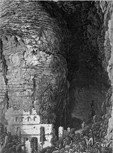
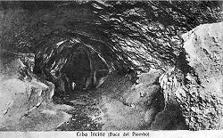
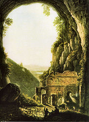

Buco del Piombio
Useful Information
|  |
| Image: historic engraving of the cave entrance by Lose (mid 19th century). |
| Location: | Near Erba. 8km ENE of Como. Leave the road Como-Lecco in Albavilla onto Via Cesare Cantù towards Castelmarte, at the Trattoria Alpina turn left onto Via Buco del Piombo. From the restaurant "Cascina Zoccolo" folllow dirt raod 2km to cave. 155 steps uphill to the cave. |
| Open: |
APR to OCT Sat 14-18, Sun 10-18. Closed after heavy rains. [2012] |
| Fee: |
Adults EUR 6, Children EUR 5. [2009] |
| Classification: |
 Karst cave.
River cave.
Cave Castle.
Maiolica formation, Cretaceous. Karst cave.
River cave.
Cave Castle.
Maiolica formation, Cretaceous.
|
| Light: | electric. |
| Dimension: | A=695m asl, L=926m, T=10°C. Portal: W=38m, H=45m. |
| Guided tours: | L=354m. |
| Photography: | |
| Accessibility: | Not accessible, many staircases. |
| Bibliography: |
G.C. Molteni ():
Grotta "Buco Del Piombo",
Tipografia Edit. Cesare Nani - Como
Nino Bazzetta de Vemenia (): Il Buco del Piombo, in GUIDA della Città e Lago di Como - Storico - Artistica -Descrittiva, pages 212-216. Marco Bomman (1998): Buco del Piombo 1997: il nostro intervento, in: Q.4000, Club Alpino Italiano 1998, Sezione di Erba, pages 4-5. |
| Address: |
Museo Buco del Piombo, Via Cesare Cantù 15, 22036 Erba Como, Tel: +39-031-629599, Mobile: +39-333-3053323.
Trattoria "Alpina", Buco del Piombo, 22036 Erba (CO), Tel: +39-031-640288, Mobile: +39-335-6707363. |
| As far as we know this information was accurate when it was published (see years in brackets), but may have changed since then. Please check rates and details directly with the companies in question if you need more recent info. |
|
History
| 300 | inhabited during roman times. | |
| 1500 | cave castle built. | |
| 1808 | visited by Italian Viceroy Eugène de Beauharnais. | |
| 1819 | visited by Archduke Rainer Joseph of Austria, Viceroy of the Kingdom of Lombardy-Venetia. | |
| 1878 | visited by Queen Margherita of Savoy, Queen consort of the Kingdom of Italy and wife of Umberto I. | |
| 1953 | electric light. | |
| 1966 | installations destroyed by a flood, cave closed. | |
| 1997 | exploration by the Club Alpino Italiano. | |
| 1998 | cave reopened. |
Description
|  |
| Image: historic postcard of the cave passage. |
The Buco del Piombio (Lead Hole) is a river cave and resurgence. The water flows only during snow melt and after heavy rains out of the entrance portal, during other times the water trickles or my dry out completely. The huge entrance portal is of impressive dimensions, 45 meters high and 38 meters wide, and this entrance hall is 40m long. It is located at the foot of a vertical limestone cliff, which is a popular climbing area. The portal is visble from the plains below, from Erba and Albavilla. There is a historic building inside the portal, which has been renovated some years ago. It now contains the Museo Buco del Piombo, a small museum dedicated to the natural history of the area.
|  |
| Image: historic painting of the cave entrance by Lose (mid 19th century). |
The name Buco del Piombio may be translated literally into lead hole. Actually, desite the name, there has never been lead inside the cave. The limestone of the cave walls has become grey by the growth of microorganisms on the surface. This colour resembles the colour of lead, and thats why this cave was named.
The cave system is located below the limestone ridge of Boletto mountain, actually the Alpe del Viceré on its southern side. This mountain ridge is up to 1,200m asl high and mostly covered by forest, the upper region is used as alpine pasture land. The mountain consists of Cretaceous limestones of the Maiolica formation, a compact white limestone, well stratified with inclusions of chert or flint.
The cave is the drainage system of this ridge, but the portal is not the main resurgence any more. The situation of this cave is typical and explained by the following model. The area is in continuous uplift, so the drainage cuts into the rock continualy lowering the valleys. Cave systems form and drain to the current level of outside drainage, but when this is lowered, a deeper level of caves is formed, draining towards this new drainage level. However, when the lower level is still young and the passages are small, the upper level is reactivated periodically when the production is too high. In other words, the water flows only during snow melt and after heavy rains out of the entrance portal.
This cave was known to mankind for a very long time. The entrance contained remains from the Moustérien like flint tools. It seems the cave was visited by hunters periodically. A deposit of cave bear bones was called Banco degli Orsi after its discovery and shows the cave was visited by cave bears (Ursus spelaeus) some 20,0000 yeras ago.
The cave was again used by man during the late Roman period, between 300 and 500 AD. During the Middle Ages the cave was fortified by the construction of a large building which blocked the entrance. The beam holes in the wall are still visible, they were used to hold the wooden floors. The cave was used for several centuries as a shelter for the inhabitants of Erba, during times of war or disease. Today there is a small exhibition, a café and the ticket office inside the renovated entrance building.
The cave was frequently visited during history, and there are engravings, paintings, and postcards to prove this. During the frst half of the 20th century it was guided as a show cave, but actually it was developed as a show cave in 1953 with the installation of electric light. But in 1966 a flood destroyed the installations and the show cave was closed. It was possible to visit the cave on your own with a torch, but there was no operator any more. A poor situation for the cave, as it may be subject to vandalizm, but it seems this cave, being a river caver cave, never had many speleothems. The cave is private property so the visits were actually trespassing, but it seems they happend. Later the area became a natural park and various locations were both protected and developed for visitors. As a result the interest in this historic and geologic place awoke. After an agreement was found between the city of Erba and the owner, the cave was reopened in 1998. Today the cave is very well developed with paths and staircases built of natural rocks.
The cave is rather difficult to reach, one of the reasons why it never was a success as a show cave. There are two possible ways. The official way is to drive to Albavilla and follow the signs to the former restaurant Cascina Zoccolo. From the center follow the Via Cesare Cantù towards Castelmarte, at the Trattoria Alpina turn left onto Via Buco del Piombo. At Cascina Ginocchio keep left, at Cascina Zoccolo the paved road ends with a parking lot. It is already high above Elba and the trail from here is actually the continuation of the road, a dirt road which leads to the cave. This is about 30 minutes walk. The second way to the cave is through the Val Bova, which starts about 700m north of the Trattoria Alpina. There is a trail along the valley and after about two kilometers a trail to the left leading up to the cave. In both cases it is necessary to climb a staircase with 155 stone steps to reach the cave entrance So actually you should always plan a walk of more than one hour in addition to the cave visit. Clothes and shoes appropriate for the walk are fine for the cave too, but bring a sweater as the cave is rather cool.
- See also
 Search Google for "Buco del Piombio"
Search Google for "Buco del Piombio" Google Earth Placemark
Google Earth Placemark Buco del piombo - Wikipedia
(visited: 05-MAY-2012)
(
Buco del piombo - Wikipedia
(visited: 05-MAY-2012)
( )
) AltaBrianza.org - Il Buco del Piombo - Erba (CO)
(visited: 05-MAY-2012)
()
AltaBrianza.org - Il Buco del Piombo - Erba (CO)
(visited: 05-MAY-2012)
()- Museo Buco del Piombo
(visited: 05-MAY-2012)
()
- PopSo | Turismo, cultura e tempo libero - Al Buco del Piombo e dintorni
(visited: 05-MAY-2012)
with map!
()
- Bdp | Enrico Ripamonti
(visited: 05-MAY-2012)